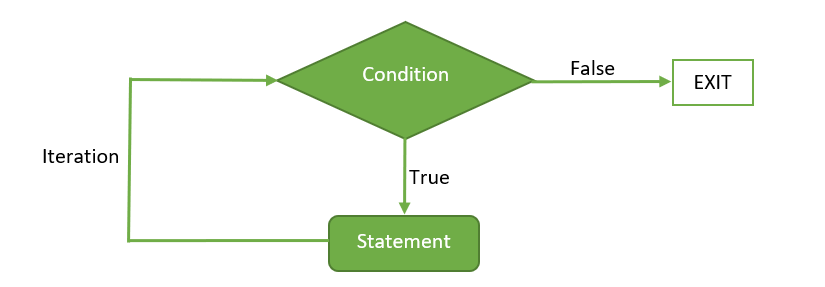

LOOP AND FUNCTION IN C++
Loops in C++
Loop statements in C++ execute the certain block of the code or statement
multiple times, mainly used to reduce the length of the code by executing
the same function multiple times, reduce the redundancy of the code.
In the programming world, the loop is a control structure that is used when
we want to execute a block of code, multiple times. It usually continues to
run until and unless some end condition is fulfilled.
Now that we have seen how a Loop works, let us make it clearer by going through
the types of Loops out there. In C++ programming, we have three types of Loops
in C++ :
Types of loops
- For Loop
- While Loop
- Do While Loop
For Loop
Loop is an entry controlled loop, meaning that the condition specified by us is
verified before entering the loop block.
It is a repetition control structure.
The loop written by us is run a specified number of times.
To control the loop, we use a loop variable in For loop.
This variable is first
initialized to some value, then we perform the check on this variable comparing
it to the counter variable, and finally, we update the loop variable.
Syntax:
for(initialization expression; test expression; update expression)
{
// statements to execute in the loop body
}
Let us look at an example of for loop:
Output:
While Loop
While loop is also an entry controlled loop, where we verify the condition specified by us,
before running the loop.
The difference is being that we use For loops when we know the number
of times the body of the loop needs to run, whereas we use while loops in
circumstances when
beforehand we do not know the precise number of times the body of the loop needs to run.
The
execution of the loop is terminated based on the test condition.
Syntax:
while (test_expression)
{
// statements to execute in the loop body
update_expression;
}

Let us look at an example of while loop:
Output:
Do While Loop
Do while loop is an exit controlled loop, meaning the test condition is verified after
the execution of the loop, at the end of the body of the loop.
Hence, the body executes
at least once, regardless of the result of the test condition, whether it is true or false.
This happens to be the foremost difference
in between while loop and do while. In while loop,
the condition is tested beforehand, whereas in do while loop the condition is verified at the
finish of body of the loop.
Syntax:
do
{
// statements to execute in the loop body
update_expression;
}
while (test_expression);
Let us look at an example of do while loop:
Output:
Function in C++
A function is a group of statements that together perform a task. Every C++ program has at least
one function, which is main(), and all the most trivial programs
can define additional functions.
You can divide up your code into separate functions. How you divide up your code among different
functions is up to you, but logically the division usually
is such that each function performs a
specific task. A function declaration tells the compiler about a function's
name, return type,
and parameters. A function definition provides the actual body of the function.
Defining a Function
The general form of a C++ function definition is as follows −
return_type function_name( parameter list ) {
body of the function
}
A C++ function definition consists of a function header and a function body. Here are all the parts of a function −
- Return Type − A function may return a value. The return_type
is the data type of the value the function returns.
Some functions perform the desired operations without returning a value. In this case, the return_type is the keyword void.
-
Function Name − This is the actual name of the function. The function name and the parameter list together constitute the function signature.
-
Parameters − A parameter is like a placeholder. When a function is invoked, you pass a value to the parameter. This value is referred to as actual parameter or argument. The parameter list
refers to the type, order, and number of the parameters of a function. Parameters are optional; that is, a function may contain no parameters.
-
Function Body − The function body contains a collection of statements that define what the function does.
A simple function example:
Output:
Types of function
We have two types of function in C++:
- Built-in function
- User-defined function

- Built-in function
Built-in functions are also known as library functions. We need not to declare and define these functions as they are already written in the C++ libraries such as iostream, cmath etc. We can directly call them when we need.
Example:
Output:
- User-defined function
We have already seen user-defined functions, the example we have given at the beginning of this tutorial is an example of user-defined function. The functions that we declare and write in our programs are user-defined
functions. Lets see another example of user-defined functions.
Example 1:
Output:
Example 2: